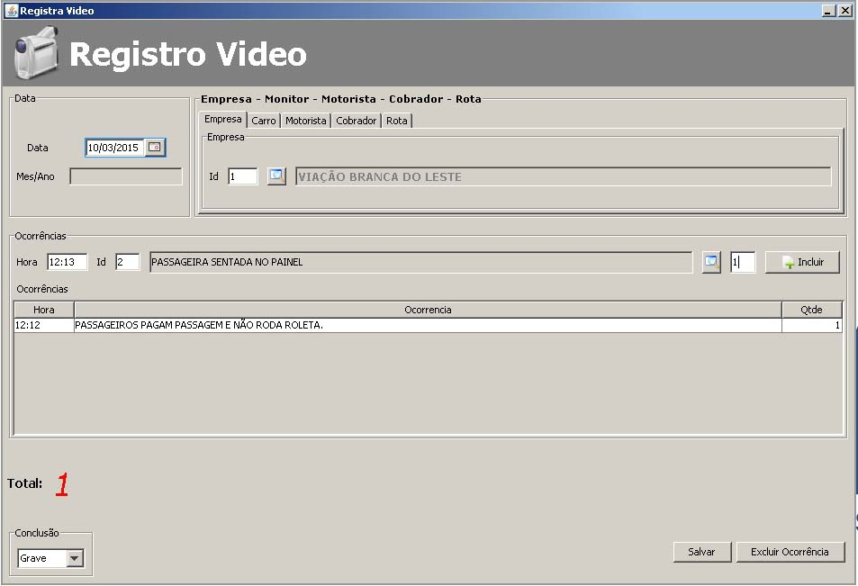
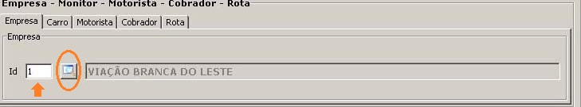
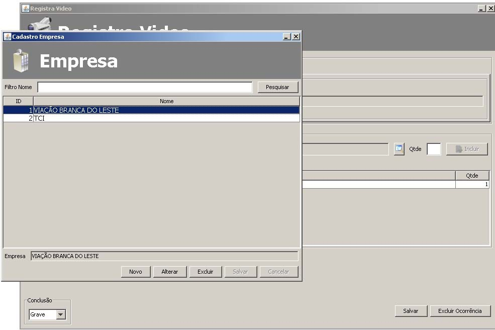

|
Registrar Video |
|
|
|
Iniciaremos o Registro de Video e ocorrências.
Por isso o menu é chamado Movimento, na Tela abaixo vamos movimentar todo o nosso cadastro no Registro do Video, em especifico o usuário(Monitor) vai fornecer informaçoes quem são a data do video-monitoramento a empresa, carro, motorista, cobrador e Rota uma única fez, após informado todos esse dados o usuário vai incluir as ocorrências que aconteceram nesse video-monitoramento que é seguida de hora e quantidade de ocorrência, no exemplo abaixo as 12:12 ocorreu uma ocorrência,PASSAGEIROS PAGA PASSAGEM E NÃO RODA A ROLETA, essa ocorrência poderia ter ocorrida duas vezer no mesmo horario, assim o usuário digitaria dois(2) em vez de um na quatidade de ocorrência, pode ser incluida várias ocorrência em um dia.
Apos incluida toda ocorrência necessaria para o dia o usuário seleciona a conclusão que por padrão já esta selecionada no grave e depois clica em salva, usuário também pode clicar em excluir a ocorrência caso tenha selecionado alguma por engano

Na tela abaixo conforme o circulo indica o usuário pode selecionar um cadastro na tela cadastro de empresa clicando no botão tem um ícone de uma lupa ou pode
digitar o id do cadastro direto no campo texto conforme a seta indica, no exemplo abaixo o usuário digitou o id 1 e o sistema setou uma empresa cadastrada
pois o id 1 existe no cadastro de empresa, caso o id não fosse localizado no cadastro de empresao sistema informaria ao usuário que o id não existe 
Na tela abaixo o usuário clicou no botão quem tem uma lupa na aba de empresas, assim o sistema abriu a tela de cadastro de empresa onde o usuário
clicou no botão pesquisar empresa e ao aparecer as empresas cadastrada no sitema o usuário clicou duas vezes na tabela em cima da empresa
que era de seu interesse estar no video e o sistema fecha a tela de empresa e seta a empresa selecionada para o Registro do Video 
Todos os procedimentos para selecionar os cadastros nas abas da tela
de Registro de video são iguais exceto o Monitor, pois o sistema seleciona automático usando o login de usuário pois o usuário
é o Monitor do Video
Localiza Empresa
Selecionado a Empresa